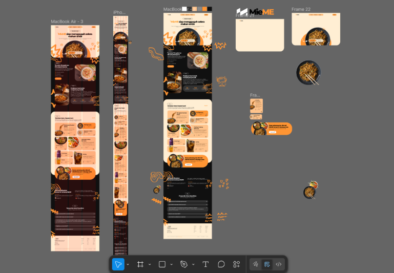

Mieme

Deskripsi Website
MieME adalah sebuah website pemesanan makanan (food-ordering) yang berfokus pada penjualan produk hidangan mie premium beserta minuman pendampingnya. Website ini mengusung desain yang modern dan dinamis. Website ini dibuat untuk menarik pelanggan dengan menampilkan visual makanan yang menggugah selera, testimoni, serta sistem pemesanan dan pembayaran terintegrasi secara langsung.
Infografis Website

Fitur-Fitur Utama
1. Halaman Utama (Landing Page)
Halaman depan website (Home) dirancang untuk menyambut pengunjung dengan tagline dan dilengkapi dengan animasi visual (scroll reveal/AOS). Terdapat juga tombol Order yang memungkinkan pengunjung langsung menuju halaman pemesanan.
2. About Us (Tentang Kami)
Bagian ini menjelaskan nilai jual dari MieME. Terdapat informasi bahwa MieME menggunakan bahan-bahan premium yang menyehatkan, bergizi, dan memiliki cita rasa yang tinggi.
3. Award (Penghargaan)
Fitur ini menampilkan pencapaian yang pernah diraih oleh MieME untuk membangun kepercayaan pelanggan.
4. Katalog Menu
Menampilkan daftar makanan dan minuman populer lengkap dengan gambar, deskripsi, estimasi waktu penyajian (misal: 25 Menit), porsi, dan harga. Beberapa menu yang tersedia di antaranya:
- Makanan: Mie Spesial Sambal Matah, Mie Signature, Mie Goreng Topping Istimewa, Mie Kuah Udang Spesial.
- Minuman: Es Teh, Es Buah Segar, Es Jeruk.
5. Testimoni Pelanggan
Terdapat fitur carousel (slider interaktif) yang menampilkan ulasan atau review dari pelanggan. Fitur ini berfungsi sebagai social proof bahwa rasa makanan MieME sangat lezat.
6. FAQ (Frequently Asked Questions)
Fitur tanya-jawab bergaya accordion yang interaktif. Berisi jawaban atas pertanyaan-pertanyaan yang sering diajukan pelanggan, seperti keunggulan MieME, bahan alami yang digunakan, menu diet/vegetarian, hingga cara pemesanan dan pengiriman.
7. Sistem Pemesanan
Halaman khusus untuk memesan makanan. Fitur di dalamnya meliputi:
- Pemilihan menu dan pengaturan jumlah porsi pesanan.
- Keranjang Belanja (Cart) di bagian bawah layar yang akan menghitung total harga secara otomatis (real-time).
- Sistem penyimpanan keranjang (pesanan tidak hilang meskipun halaman sempat ditutup sementara).
8. Detail Pesanan
Halaman checkout di mana pelanggan dapat meninjau kembali daftar menu yang sudah dipilih, memastikan jumlah porsi sudah benar, dan melihat total tagihan akhir sebelum mengonfirmasi untuk bayar.
9. Beragam Metode Pembayaran
Setelah pelanggan siap membayar, website menyediakan halaman yang menampilkan berbagai opsi metode pembayaran yang lengkap dan memanjakan konsumen Indonesia, yaitu:
- Bank Transfer
- E-Wallet
- Virtual Account (VA)
- QR Payment (QRIS)
Desain Wireframe
Wireframe MieME ini dirancang sebagai tahap awal untuk memvisualisasikan struktur dan alur antarmuka website sebelum masuk ke tahap pengembangan. Proses perancangan yang dilakukan dengan tools Figma ini dimulai dengan menyusun layout utama seperti landing page, katalog menu, hingga halaman pemesanan dan pembayaran secara terstruktur dari atas ke bawah. Setiap section dibuat dengan mempertimbangkan pengalaman pengguna (user experience), seperti penempatan tombol "Order" yang mudah dijangkau, tampilan menu yang informatif, serta alur checkout yang jelas dan tidak membingungkan. Selain itu, wireframe juga menunjukkan konsistensi desain antara versi desktop dan mobile, sehingga memastikan website tetap responsif di berbagai perangkat. Dengan adanya wireframe ini, pengembangan MieME menjadi lebih terarah karena sudah memiliki gambaran jelas terkait navigasi, hierarki konten, dan interaksi pengguna.
